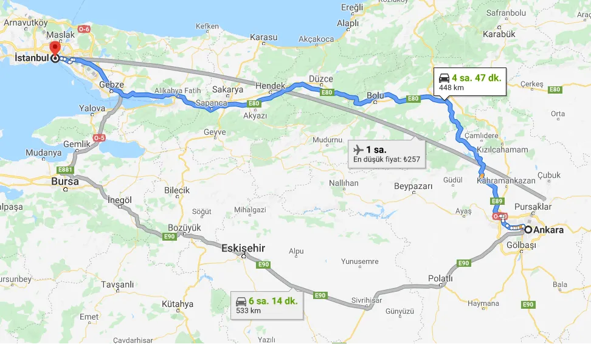
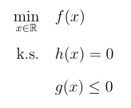

Genel manada eniyileme, bir durumu sonuca götürmek için uygulanabilecek birkaç seçenek arasından en iyisini seçmek olarak söylenebilir. Ancak bu en iyi seçeneğin tüm seçenekler arasından hangisi olacağı, durumun isterlerine ve kısıtlara göre belirlenebilir. Bunu daha iyi açıklayabilmek için bir kaç örnek inceleyelim.
İlk örnek durumumuzda diyelim ki İstanbuldan Ankara’ya gitmeyi istiyorsunuz ve önünüzde bir kaç seçeneğiniz var: uçağa binebilirsiniz, Bolu üzerinden kendi aracınızla veya otobüsle gidebilirsiniz ya da Eskişehir üzerinden, Osmangazi köprüsünü de kullanarak yine kendi aracınızla veya otobüsle gidebilirsiniz.

İstanbul-Ankara arası ulaşım seçenekleri, Google Haritalar.
Görüldüğü gibi elinizde birkaç seçenek mevcut. Ancak sizin bu yolculuk için önceden belirlediğiniz bazı kısıtlarınız da var. Bu kısıtlarlar, kendi aracınızla gitmek ve olabilecek en kısa sürede bu yolculuğu tamamlamak. Bu iki kısıtı da gerçekleyebilmeniz için, yukarıdaki haritada da tavsiye edildiği gibi, mavi renkle belirtilmiş güzergah diğer seçenekler arasında en uygun olarak görülüyor.
Diğer bir durum olarak da, bir sabit kanatlı insansız hava aracı tasarladığımızı düşünelim. Bu hava aracının uçuş sırasında, bizim önceden belirlediğimiz kısıtlara göre hareket etmesini isteriz. Bu kısıtlara örnek vermek gerekirse havada kalma yani görev süresinin mümkün olduğu kadar fazla olması bizim önceliğimizdir. Bunu da ancak yakıt tüketimini, burada yakıt hem petrol türevi olarak hem de bataryalardaki elektrik akımı olarak anlaşılabilir, belirli seviyelerde tutarak gerçekleyebiliriz.
Anka İHA, TUSAŞ.*
İşte bu noktada bir hava aracının yakıt tüketimini nelerin etkileyebileceğini belirlememiz gerekiyor. Öncelikle hava aracının toplam kütlesinin bir limitin altında tutulması önemlidir. Bunu dengelemek için ise hava aracının görev tanımı iyi belirlenmeli ve faydalı yüklerinin, aracın görev tanımına uygun olarak seçilip, araca yerleştirilmesi gereklidir. Yakıt tüketimini etkileyen bir diğer etmen ise aracın aerodinamik yapısıdır. Bunun için en verimli malzemelerin kullanılması, yakıt tüketimini en verimli şekilde kullanmaya katkı sunacaktır.
Bir uçağın hareket etmesinden görevini yerine getirip tekrar kullanılabilir halde üsse geri dönmesine kadar geçen sürede etkili olan etmenler elbette ki yukarı da bahsedilenler kadar az değildir. Ancak temel bir anlayış oluşturmak için, uçağın üretim maliyeti ve parçaların temin süresi gibi etmenleri de problemimizin birer parçası olarak söyleyebiliriz. Böylece ulaşmak istediğimiz hedeflerin sayısı da artırılıp, hepsini en iyi, en verimli şekilde gerçekleyebilecek parametreler, bizim için uçağın üretim sürecinde etkin rol oynamış olur.
Son olarak bir örnek durum daha inceleyim. Altta bir odanın ışıklandırma şematiği verilmiştir. Buna göre odaya, 8 tane ışık kaynağı, {x1, x2,…, x8} ve 5 tane de ışık miktarını algılayan sensör yerleştirilmiştir, {y1, y2,…, y5}.

Bizden istenilen ise, odanın belirli yerlerindeki ışık miktarını algılayan sensörler vasıtasıyla, belirli zaman aralıklarında ölçülen aydınlanma miktarına göre, ışık kaynaklarının parlaklıklarının kendiliğinden ayarlanması için bir kontrolcü tasarlamak. Burada asıl istenilen ise ışık kaynaklarının çektikleri akım miktarlarının belirli seviyeler arasında tutulması ve en verimli biçimde odanın her yerinde istenilen miktarlarda aydınlanmanın sağlanması.
Bu problemin aslında sonsuz çözümü bulunabilir bu yüzden de çözümler arasında bizim kısıtlarımıza en yakın çözümü bulmamız gerekmektedir. Bu probleme ilerleyen makalelerimizde tekrar döneceğiz. Bununla ilgili çözüm önerimizi de orada paylaşacağız.
Bu örnek uygulamalara daha pek çok ekleme yapılabilir. Örneğin, bir fabrikanın deposunun yerinin belirlenmesi veya bir nehrin üzerine inşa edilecek asma köprünün konumunun tespiti veya akıllı şebeke sistemlerinin kontrolü için optimizasyon problemleri oluşturulabilir. Ayrıca ekonomi alanında bu problemlerin tanımlarından ve çözüm algoritmalarından oldukça faydalanılmaktadır. En güncel ve revaçta olan kullanım yerlerinden birisi de yapay sinir ağlarının matematiksel modellemesi olarak karşımıza çıkıyor.
Uygulama örneklerinden de anlaşıldığı üzere, eniyileme yapmak demek, problemin çözümü için uymamız gereken kısıtlamalara göre, ulaşmak istediğimiz amaca en yakın olarak gerçekleştirmeye çalışmaktır. Bu amaca artık amaç fonksiyonu diyeceğiz ve çözüm önerilerimizi hep bu fonsiyonun alabileceği en küçük (min) veya en büyük (max) değerini bulmaya yönelik olarak sunacağız.
Bir eniyileme problemini aşağıdaki gibi matematiksel olarak ifade edebiliriz.

Burada f(x) fonksiyonu amaç fonksiyonu, h(x) fonksiyonu eşitlik kısıtı ve g(x) de eşitsizlik kısıtı olarak problemimizde verilmiştir. Yukarıdaki tanımda verilen ‘k.s.’ ise kısıtları ifade etmektedir. Bu yabancı kaynaklarda ‘s.t.’ veya ‘subject to’ olarak gösterilir. Amaç fonksiyonunun değerini azaltırken seçilecek x değerlerinin reel sayılar kümesinde olması gerektiği de ‘min’ ifadesi altında belirtilmiştir.
Kısıtlı matematiksel optimizasyon serimizin ilk kısmının böylece sonuna geldik. Bu makalemizde, genel manada optimizasyon problemlerinin neyi ifade ettiğinden bahsettik. Bir kaç uygulama örneğiyle de kavramsal olarak daha iyi anlaşılmasına çalıştım. Serinin ilerleyen makalelerinde, bu problemlerin biraz daha matematiksel altyapılarından bahsetmeyi planlıyorum.
→ Kısıtlı Matematiksel Eniyileme (Optimizasyon): 2. Modelleme